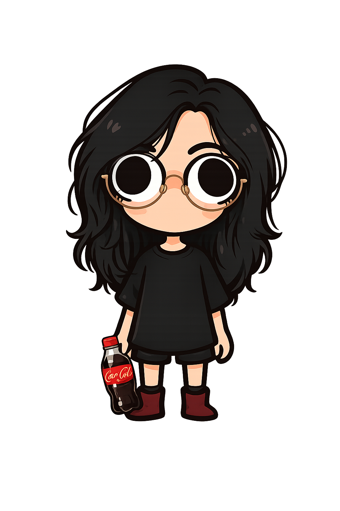

/* stack que uso */linguagens,
ferramentas e infra
As tecnologias por trás dos meus projetos.
De linguagens a infraestrutura em nuvem — o que uso no dia a dia pra construir, testar e colocar no ar.
Interfaces, APIs e ferramentas de segurança — projetadas entre estágio, faculdade e curiosidade com o mundo do cyber.

Sou Lucas, tenho 27 anos e sou formado em Engenharia de Computação, apaixonado por construir coisas reais, não só tutoriais.
Atualmente cientista de dados, desenvolvendo soluções inovadoras com foco em dados e IA.
Também mergulho fundo em desenvolvimento e cibersegurança, porque entender como as coisas quebram é a melhor forma de aprender a construí-las melhor.
Com curiosidade como motor, código como ferramenta e muito Guaraná Zero como combustível.
Cada projeto abaixo é uma tentativa diferente de resolver um problema real — de rede, de dados ou de proteção.
Sistema corporativo integrado à IA Generativa (Google Gemini/Groq) para triagem, extração de metadados, auditoria e geração automatizada de resoluções de documentos jurídicos (com adequação à LGPD).
🔒 Projeto InternoSistema completo de gerenciamento de filas e notícias. Uma solução moderna, robusta e em tempo real para otimizar o atendimento ao cidadão.
Ver projeto ↗Uma aplicação web interativa desenvolvida em React para apresentar documentação histórica, galeria de fotos e estatísticas de produção do lendário Nissan Skyline GT-R BNR34.
Ver projeto ↗Um aplicativo web interativo para sortear seleções e copas, além de permitir o "draft" de jogadores para compor o seu esquadrão ideal com um visual de cartas colecionáveis.
Ver projeto ↗Desenvolvimento deste portfólio utilizando HTML, CSS e JavaScript com Bootstrap, com foco em responsividade e acessibilidade.
Ver projeto ↗Interesse em computação em nuvem, redes e infraestrutura: TCP/IP, DNS, DHCP, VLANs, firewall e VPN, com prática em análise de tráfego e reconhecimento de ativos.
Cerberus (OSINT e reconhecimento) e AEGIS (ensino gamificado de segurança) nasceram desse interesse — ferramentas próprias pra praticar o que estuda em redes e infraestrutura.
De linguagens a infraestrutura em nuvem — o que uso no dia a dia pra construir, testar e colocar no ar.
Cientista de dados do Estado de Goiás enquanto curso pós-graduação. O dia a dia analisando dados, desenvolvendo relatórios e auxiliando na gestão de projetos e sistemas.
Saindo de projetos simples pra sistemas completos com autenticação, APIs REST e banco de dados relacional. React, Python, Next.js, C# e .NET viraram ferramentas do dia a dia.
Comecei a me interessar por computação no ensino fundamental, fazendo cursos de informatica e desenvolvendo os primeiros projetos.
Quer o currículo completo? baixar em PDF ↗
Tem um projeto em mente ou quer bater um papo sobre tecnologia e segurança? Me manda uma mensagem, respondo o mais breve possível.
✉ lustosa.dev@gmail.com ◐ github.com/thelustosa ◑ linkedin.com/in/lustosadev/